UX Design Challenge · Mobile App · 2024
Parking in co-working spaces
A rapid design challenge — designing a mobile-first parking solution for a corporate employee navigating an unfamiliar co-working facility
The brief
Ram is a new corporate employee at a co-working office. Every morning, he spends around 15 minutes navigating two floors of parking looking for visitor spots — with no real-time availability information, unclear demarcations between visitor and reserved areas, and no colleagues to ask for help. He was eventually penalised for parking in a reserved spot he had no way of identifying as such.
The brief asked for a mobile-first solution that would solve his immediate daily frustration — while also accounting for the fact that he'll eventually be assigned a permanent parking spot, and the solution needed to support that transition.
"Design a solution that reduces uncertainty, saves time, and provides a seamless transition to permanent parking — using latest and feasible technologies available today."
Starting with research, not screens
Rather than jumping straight to wireframes, I started by separating what the brief told me from what I'd need to verify. The brief established Ram's pain points clearly. What it didn't tell me was whether those pain points were unique to Ram — or representative of a larger pattern in how people experience corporate parking.
I ran two streams of research in parallel: secondary research into existing parking technology solutions (Park+, Get My Parking, ValetEZ, ParkingRhino) to understand what the market had already tried, and primary research through interviews with people who use corporate and co-working parking regularly.
What the brief assumed vs what research showed
I mapped every assumption from the brief against what primary and secondary research actually confirmed. Not everything held up.
Confirmed — unclear visitor vs reserved markings was the most commonly cited source of confusion across both research streams
Confirmed — multiple turns, unclear signage, and multi-floor layouts without guidance created consistent frustration
Confirmed by primary research — new employees lacked informal channels to clarify rules, and this was a distinct compounding factor
Partially confirmed — reserved spot misuse was noted, but penalties weren't explicitly raised by participants; more of an institutional friction than a daily user one
Not validated — neither primary nor secondary research surfaced this as a meaningful user need; dropped from scope
Newly surfaced — primary research revealed that high-seniority reserved spots often sit empty when employees work from home, while others struggle to find spots at all
Research reframe
The brief framed this as a navigation and demarcation problem. Research suggested the deeper issue was uncertainty — about availability, about rules, about what would happen if Ram got it wrong. The design needed to address confidence, not just wayfinding.
Competitive landscape
Existing solutions like Park+ and Get My Parking solved the real-time availability problem well — but were built around public parking lots, not the nuanced hierarchy of co-working facilities where reserved, visitor, and dynamically allocated spots coexist in the same physical space.
ValetEZ and ParkingRhino handled the B2B management layer but offered little to the individual employee trying to navigate the space. None of the platforms addressed the social friction of being new — or the transition from temporary visitor status to permanent allocation.
Gap identified
The underserved space: a parking solution designed from the employee's perspective first — not the operator's — that accounts for both the daily uncertainty of visitor parking and the contextual complexity of co-working facility hierarchies.
Problem framing
Rather than solving "how do we help Ram find a spot," the research reframed the core question:
This framing covered the immediate daily friction (finding and validating a spot) and the longer-term transition (notification of permanent allocation) without requiring a feature-heavy solution to both simultaneously.
Current state — Ram's journey before the solution
Enters the parking lot with no information about what's available. Starts on floor 1 and works upward.
😕 Uncertain — "Will I find something today?"
Navigates two floors, no signage, no real-time data. Spends ~15 minutes looking. Sometimes asks security — who may or may not know.
😤 Frustrated — "Why aren't these clearly marked?"
Spots an area that looks available. Parks. Hopes for the best. No validation mechanism exists.
😟 Nervous — "Am I going to get a penalty again?"
Receives a fine for parking in a reserved area he couldn't identify. No appeal mechanism. No way to know in advance.
😡 Angry + embarrassed — "How was I supposed to know?"
Dreads tomorrow. No update on when his permanent spot will be assigned. No channel to report the issue.
😔 Resigned — "I'll have to deal with this until something changes."
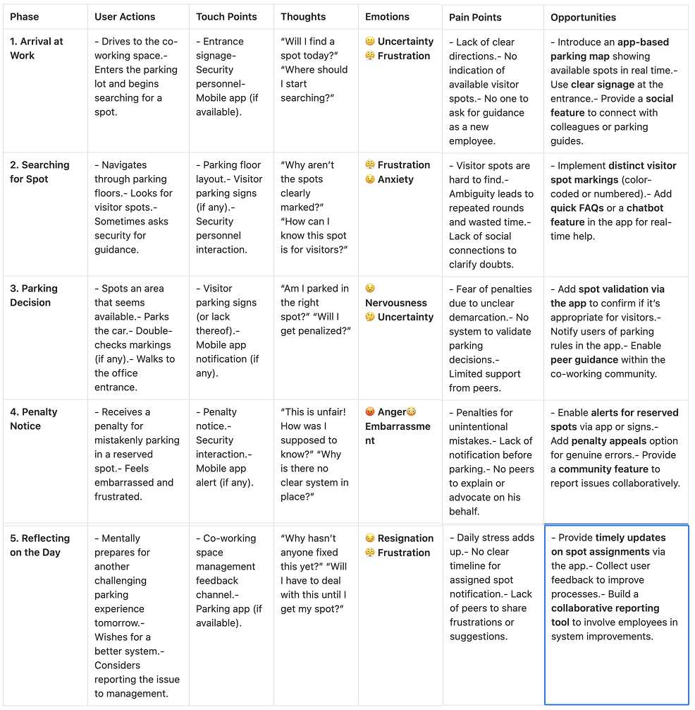
Five stages from arrival to end-of-day, showing where uncertainty compounds — and where the largest opportunities for intervention sit.Feature prioritization
With a large ideation surface — real-time maps, IoT validation, AR overlays, drone guidance, gamification, community forums — I applied MoSCoW to focus the MVP on what would meaningfully reduce daily uncertainty without requiring infrastructure that didn't yet exist.
Color-coded display of visitor, reserved, and vacant spots — the single biggest reducer of daily uncertainty
Confirm before parking whether a spot is valid for visitors — removes the guesswork that led to penalties
Voice-guided directions to a selected spot — hands-free, reduces circling
The brief explicitly required this — Ram needs to know in advance when his status changes
Transparency on dues; ability to contest penalties — addresses the fairness gap directly
Research-surfaced — senior employees not coming in shouldn't mean everyone else has fewer spots
Addresses the new employee knowledge gap — no colleagues to ask shouldn't mean no answers
Not validated by research, or technically infeasible at this stage — deferred
Key flows designed
- Open app → real-time map loads
- Filter by spot type, EV, covered
- Select and validate spot
- Book — spot marked reserved
- Navigate to spot
- Reserved holder gets morning notification
- Confirms attendance: Yes / No
- No response → spot auto-released
- Visitor pool updated in real time
- Dashboard shows dues and history
- Dispute with photo evidence
- Integrated payment (UPI, card)
- Confirmation and updated status
- Notification when spot is assigned
- In-app confirmation and details
- Navigation updated to new spot
- Onboarding to new status
Sketches and wireframes
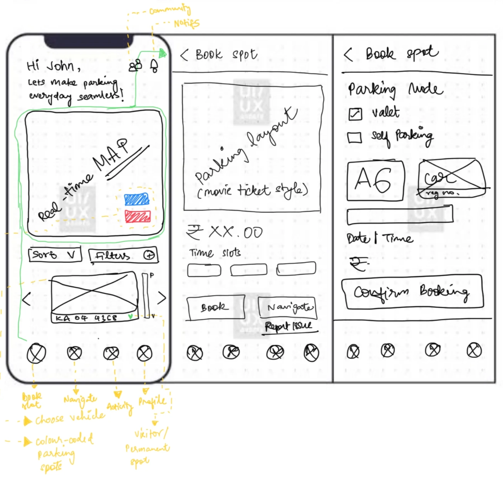
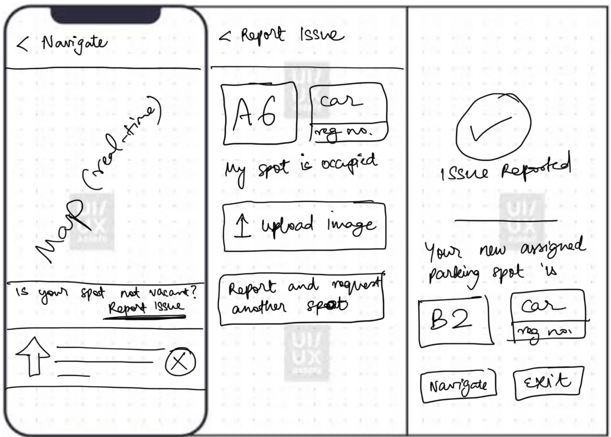
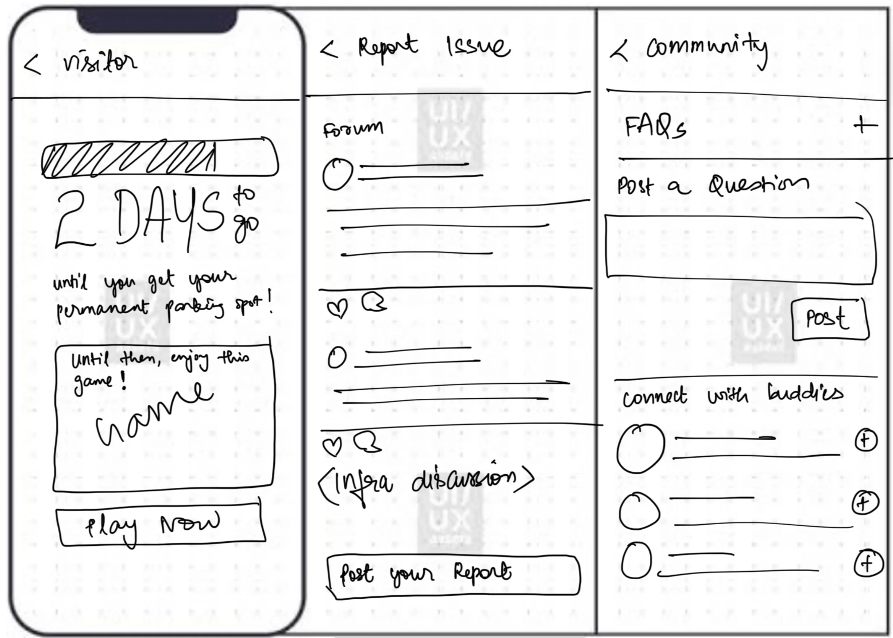
Hand-drawn sketches exploring navigation structure, map layout, and the booking flow before committing to digital wireframes. Wireframes covering splash screen, onboarding, login, setup, and first booking — mapped on Miro before moving to high-fidelity.
Wireframes covering splash screen, onboarding, login, setup, and first booking — mapped on Miro before moving to high-fidelity.
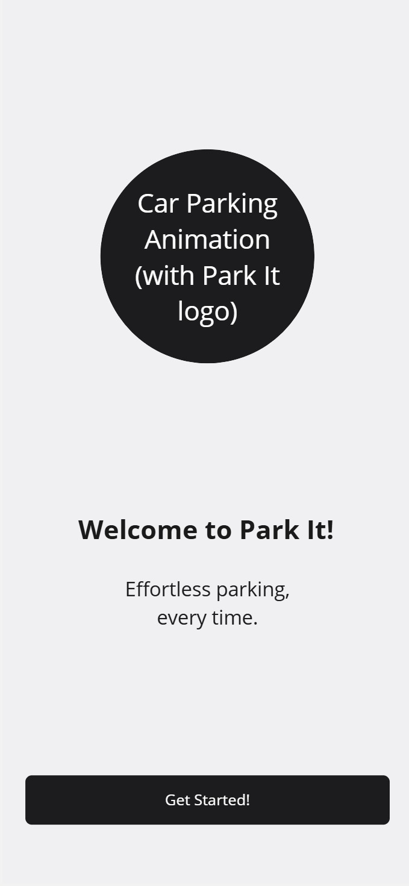
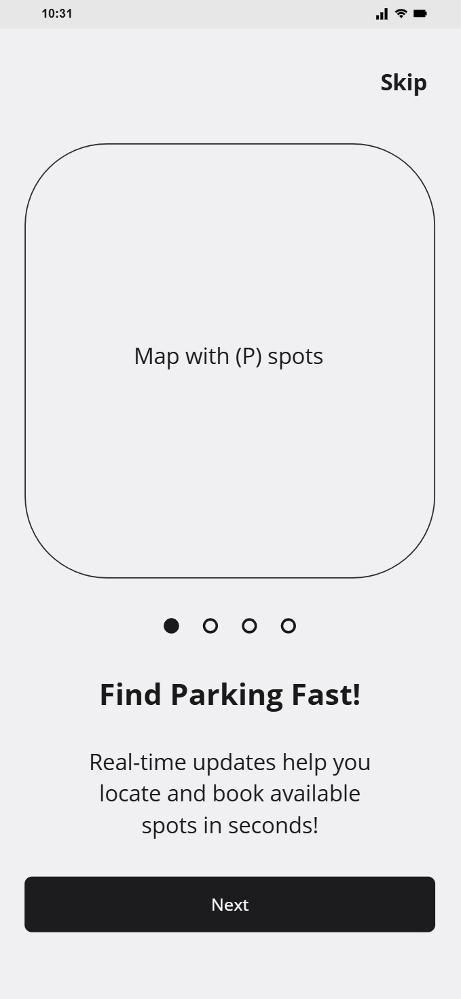
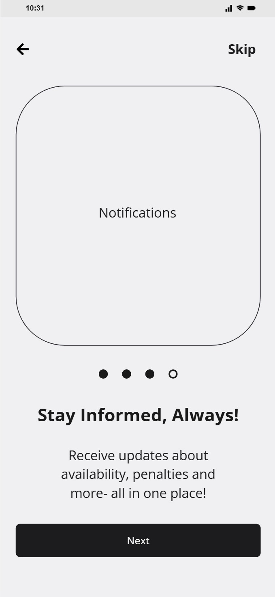
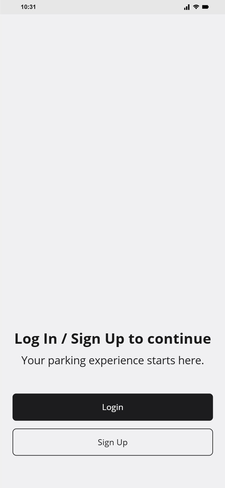
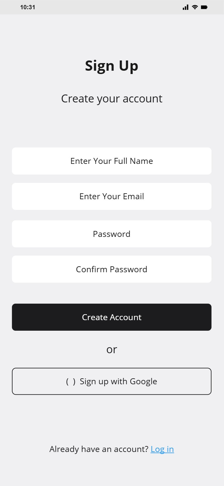
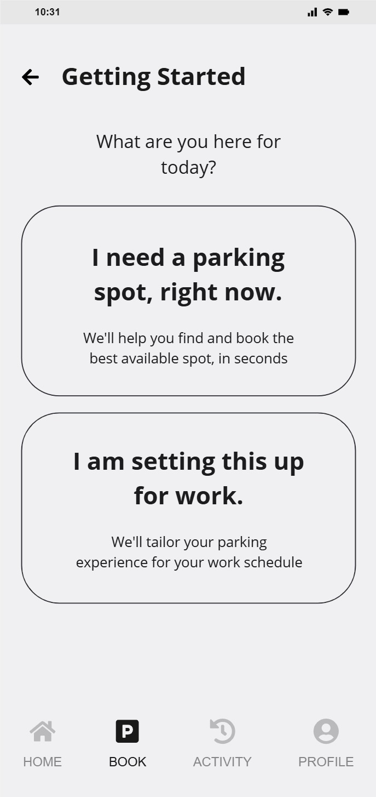
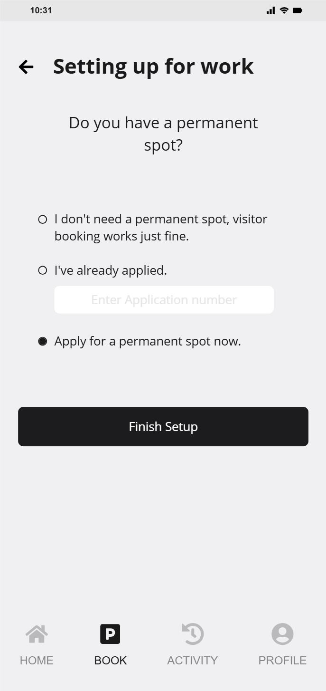
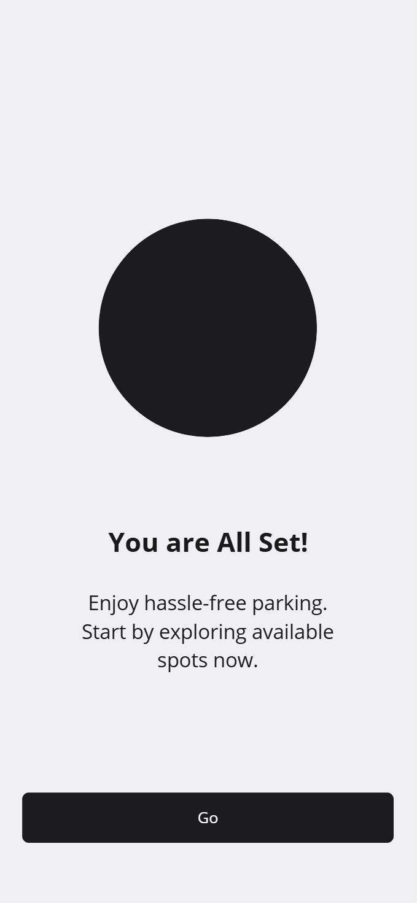
Reflection
The most useful thing I did early in this challenge was map my hypotheses explicitly before starting research — separating what the brief assumed from what I'd need to verify. That discipline surfaced a few things the brief didn't raise: the dynamic allocation problem (vacant reserved spots while employees search for visitor spots) and the new employee knowledge gap that made the situation worse than it needed to be.
It also helped me confidently drop gamification from scope. It sounded compelling in ideation, but neither primary research nor competitive analysis gave it any support. Knowing why you're not building something is as important as knowing what you are.
If I had more time, I'd have run usability testing on the real-time map interaction — specifically how users respond to color-coded spot availability under time pressure while driving. That's the highest-stakes interaction in the flow and the one most worth testing before building.
A parking problem that looked like a navigation problem turned out to be an uncertainty problem. Getting that distinction right — through research rather than assumption — changed what the solution needed to do.